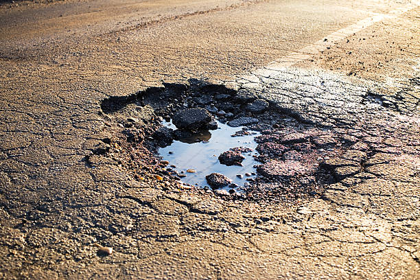

Road Issue
Damaged roads, potholes, and uneven surfaces can cause accidents and inconvenience for drivers and pedestrians. If you notice a road issue in your area, report it to help ensure safer and smoother travel for everyone.
Damaged roads, potholes, and uneven surfaces can cause accidents and inconvenience for drivers and pedestrians. If you notice a road issue in your area, report it to help ensure safer and smoother travel for everyone.